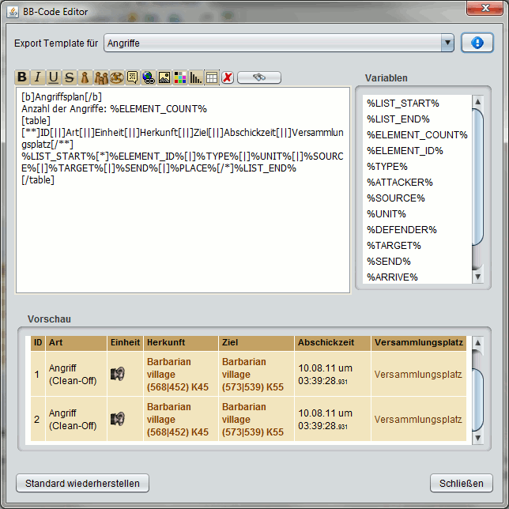

Der BB-Code Editor |
|
|  | |
Der BB-Editor befindet sich im Hauptmenü des Hauptfensters oben links und bietet die Möglichkeit, fast jeden BB-Code Export in DS Workbench den eigenen Wünschen anzupassen. Hierfür kann man im oberen Bereich das BB-Template für den gewünschten Typ wählen, etwa den für Angriffe und anschließend dieses Template im unteren Bereich editieren. Oben links befindet sich ein Button mit einem Info-Symbol. Klickt man diesen erscheint eine Liste mit allen verfügbaren Variablen auf der rechten Seite, wie sie im Screenshot zu sehen ist. Für Angriffe sind z.B. der Angreifer (%ATTACKER%), das Ziel (%TARGET%) oder die Abschickzeit (%SEND%) verfügbar. Ändert man das Template wird die BB-Vorschau im unteren Bereich dynamisch aktualisiert. Die Änderungen werden für den nächsten BB-Export wirksam, sobald man den BB-Editor schließt. Weitere Erklärungen zu den unzähligen Möglichkeiten erspare ich euch an dieser Stelle. Spielt einfach ein wenig mit dem BB-Editor rum wenn es euch interessiert. Falls ihr einen Fehler macht könnt ihr jederzeit über den Button "Standard wiederherstellen" das Template auf den Wert zurücksetzen wie er bei der Installation gesetzt war. |
|
| Die Stämme beschränkt die Anzahl der verwendeten BB-Codes pro Forumsbeitrag, IGM und in den Notizen auf 1000 Elemente. Dies erscheint auf den ersten Blick ziemlich viel, beim Export von Angriffe ist diese Grenze jedoch schon bei etwa 56 Angriffen erreicht. In diesem Fall gibt DS Workbench eine Fehlermeldung aus und ihr könnt entscheiden, ob ihr die Menge der exportierten Angriffe reduzieren oder die Daten dennoch exportieren wollt. Solltet ihr öfters auf solche Probleme stoßen könnt ihr im BB-Editor die exportierten Informationen reduzieren um mehr Daten exportieren zu können. | |